欧游札记之火舞西班牙(Day3巴塞罗那—圣家堂—巴塞主教堂—哥伦布塔—奥林匹克港)
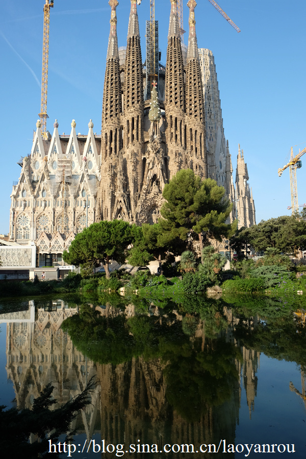
圣家堂倒影
高大爷的扛鼎之作-圣家堂总算得以一睹为快，尽管在奎尔公园及圣保罗医院都远远地领略过其卓然而立的风采，但真走近来看的时候却又是另一番震撼景象。与欧洲其他历史悠久的大教堂相比，自1882年起建了一百三十多年、至今仍未完工的圣家堂走的却是另外一条特立独行、以设计取胜的道路。有人说它是人类拖延症所造就的最大烂尾楼，也有人说它是高迪缓慢而顽强生长的遗腹子，高迪则认为它的客户—上帝耗得起这个时间所以不必着急，不管众说纷纭如何，圣家堂宛若一座庞大的自然生命体般，我行我素地依靠捐款和门票资金茁壮成长，当之无愧地成为了巴塞罗那独一无二的地标性建筑。
圣家堂的外部有三大著名立面“诞生立面”、“受难立面”和“荣耀立面”。其中南边的“荣耀立面”至今尚未完工，而“诞生”及“受难”立面则分别由高迪亲自设计完成或根据其手稿由后续建筑师接力完成。两个立面的风格迥然不同，“诞生立面”描绘了耶稣诞生前后的圣经故事，画面风格蓬勃向上、欣欣向荣，人物及景物雕刻笔法采用了无以复加细腻和繁复的技法，不但圣经中各种人物栩栩如生，本应作为背景，象征性点缀装饰一下的花草虫鱼及水果浮雕尤其多，密密麻麻占据了大部分画面却又不显得喧宾夺主，估计有密集恐惧症的人看了会歇菜。 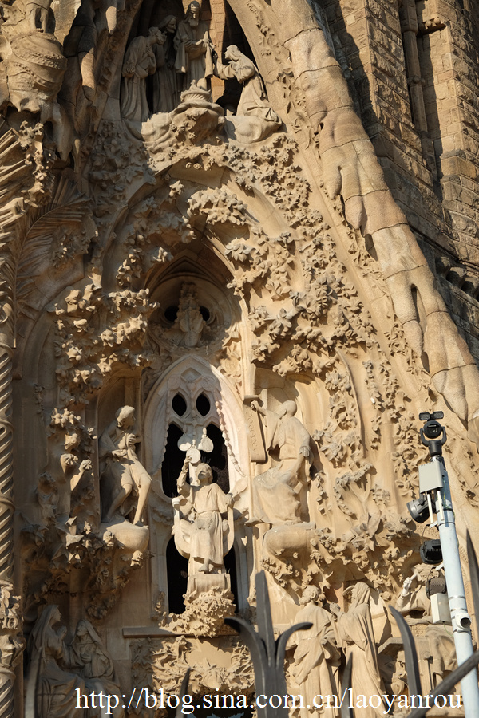
诞生立面细部
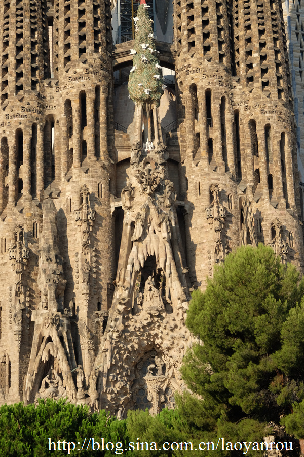
诞生立面局部
而“受难立面”的风格则是非常忧郁和单调，甚至有点简陋的感觉，除了保留耶稣受难故事的主体人物以外，摒弃了所有无关背景装饰，连人物都被塑造成方头方脑、面目不清的抽象派模样，与“诞生立面”热闹喧哗相比简直令人怀疑是否是同一个设计师的作品，但仔细品味一下，两个立面风格的强烈对比其实充分体现了高迪对不同宗教场景的个人情感反差。 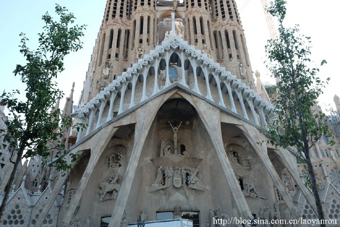
受难立面
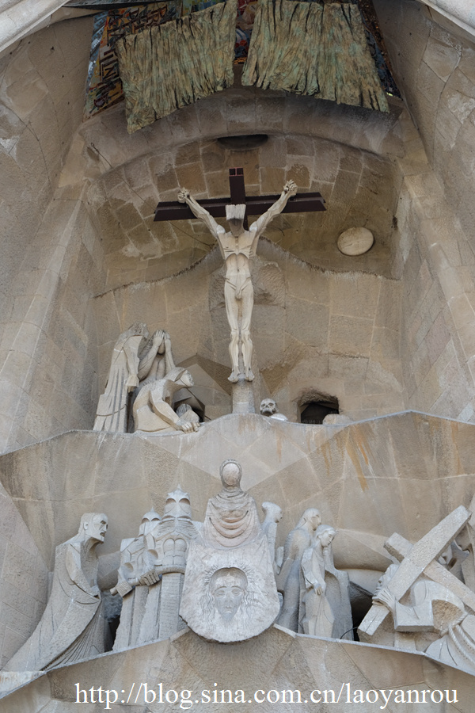
受难立面细节
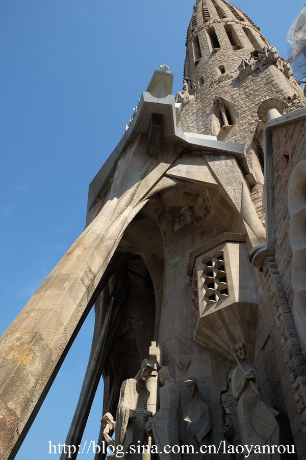
受难立面一角
三大立面往上是四座巍峨的哥特式钟塔，我们从“受难立面”搭电梯吭哧吭哧登顶后便可一览纵山小，欣赏鬼才高迪将一堆堆的蔬菜水果如桑葚、草莓、青瓜等等，全部用彩色马赛克瓷片“镶”到了圣家堂塔尖上，令人不禁猜测这是否为一种献祭手法？就如同我们烧香拜佛或祭拜先人时需供奉水果一样的道理。
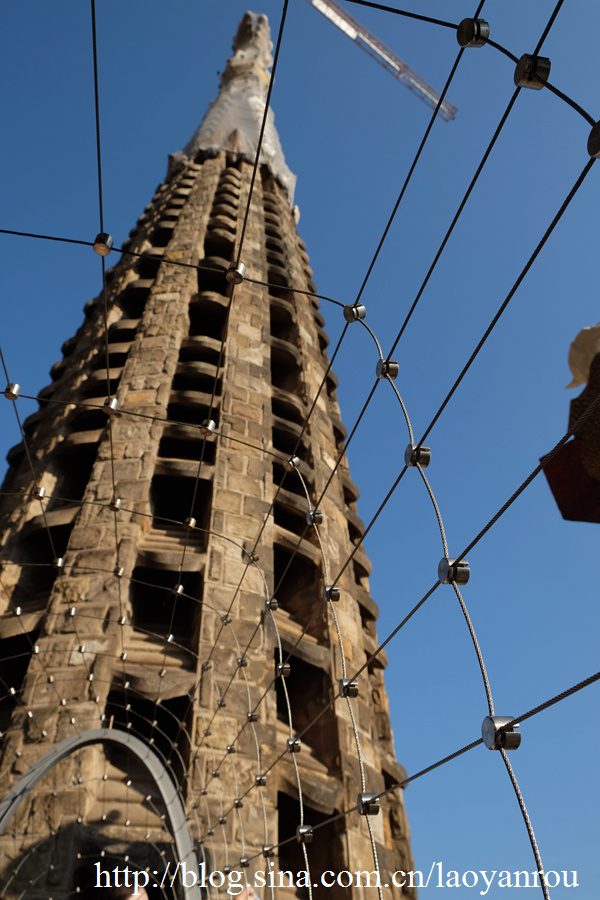
哥特式钟塔
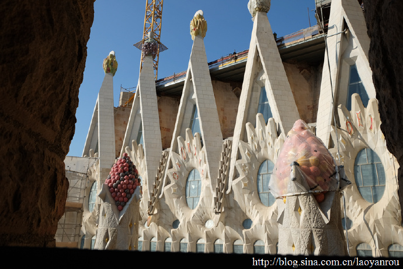
水果塔尖
尽管教堂正中高达170多米的耶稣塔仍在建设中，无法体会登顶世界最高的教堂的感觉，但即使从十二门徒钟塔往下看依然感觉有点眩晕，可以毫不费力地将远处的巴塞老城一览无遗，很多在地面无法看到的教堂顶部雕塑的细节也可以看得一清二楚。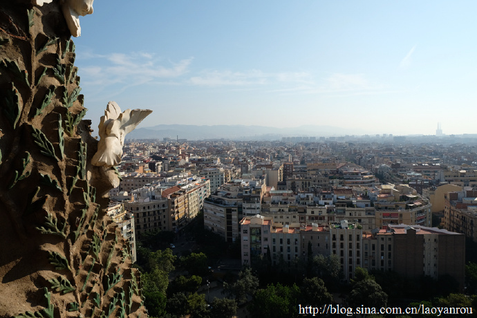
钟塔俯瞰老城
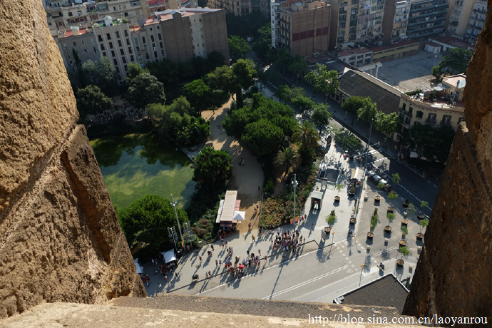
俯瞰地面广场
从塔顶下来只能走螺旋状的钟塔楼梯，所谓上山容易下山难，塔身狭窄部分直径不到两米，所有空间基本全部被楼梯占据，即便如此也只能一个人接着一个人缓慢盘行，从顶往下看去整座楼梯仿佛鹦鹉螺的螺纹线般无止境地延伸向下，楼梯中间偶尔也会有小方窗对外通风，才显得没有那么憋屈狭窄。
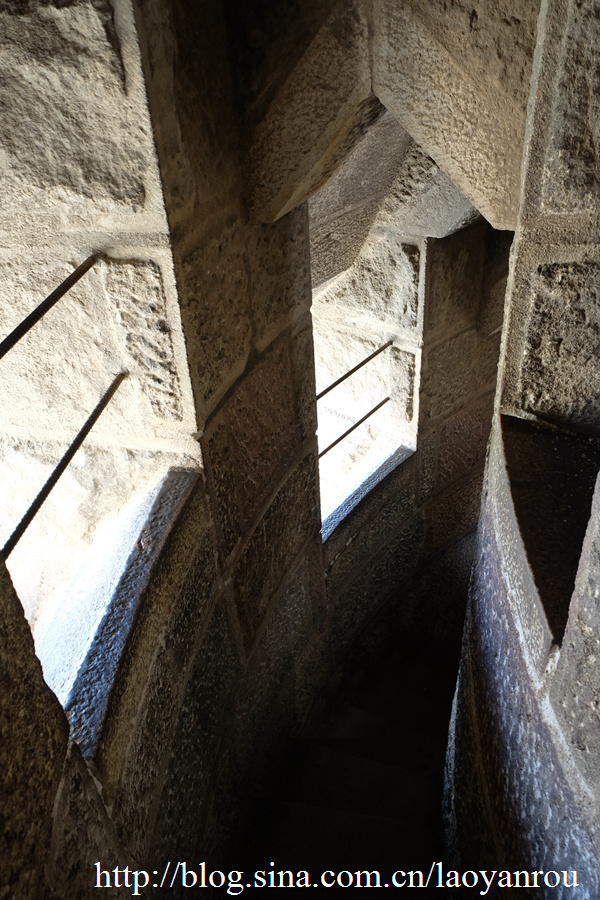
螺旋楼梯
而从塔顶下来后旁边有条通道可以直接进入圣家堂地下部分，这里有圣家堂历代建筑师的工作室，里面摆设陈设了大量的建筑模型和图纸，包括整个圣家堂内部立柱结构模型和力学仿真模型等。可想而知为了完成这座惊天地泣鬼神的建筑，有多少代建筑师包括高迪在内前赴后继，花费了多少时间精力和心血在它上面。
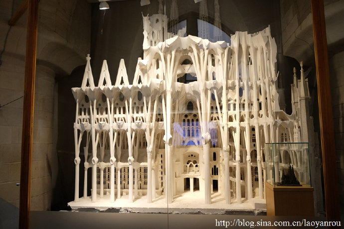
立柱模型
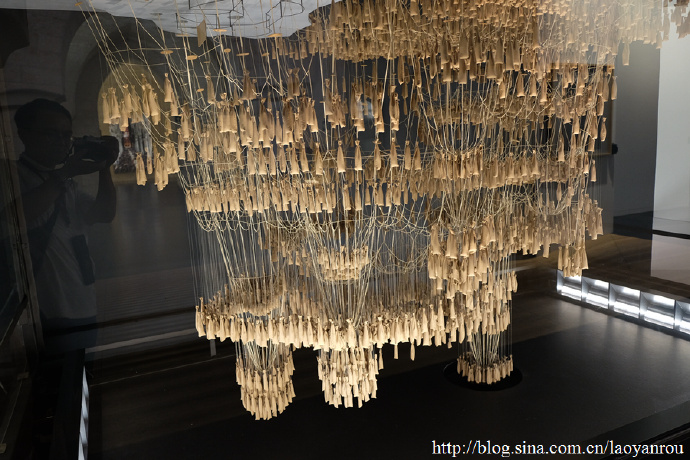
力学模型
等进入了圣家堂内部，之前所看到的外部景象与之相比顿时黯然失色，我相信每个人都会不禁发出“哇噢”的惊叹。因为你压根没有想到过自己走进的不是一个阴森肃穆的哥特式教堂而是一座正在蓬勃生长的巨型森林。不是柱子太过密集类似森林，而是目之所及全都是森林元素的化身。两侧灰色粉色的高大立柱如同树干般在中部分支开杈地直冲云霄、支撑拱顶，而拱顶则全部设计成层层叠叠的棕榈叶。无数光束从拱顶所开圆孔穿透下来仿佛阳光穿透了棕榈叶直射地面，而教堂两侧的巨大彩色玻璃窗又将外面射入的阳光染成了光怪陆离的各种颜色，蓝紫色、橙绿色的光斑随着太阳角度改变在地面肆意变化流动，像是森林里变化无穷的各种自然光。我们就仿佛置身于古树参天、枝繁叶茂的亚马逊大森林中，沐浴在穿过重重云雾和树叶的阳光下，闭着眼睛就能呼吸到原始森林的味道、听见鸟雀虫兽的声音。如此感觉实在是太过奇妙，实在难以用言语描述。高大爷认为自己设计灵感来源于“大自然这本伟大的书”，还是过于谦虚，他的设计虽然源于自然却已超脱于自然了，他对自然仿生学的把握及光影的应用已经达到出神入化、鬼斧神工的水平，想必高迪之后，世上再无人能将自然诠释得这么完美了。 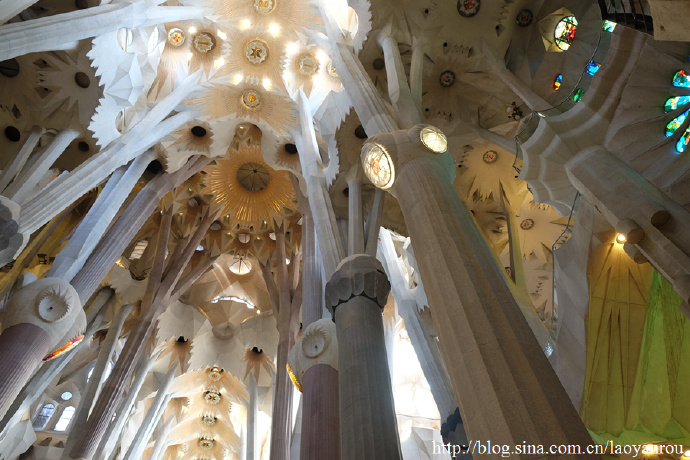 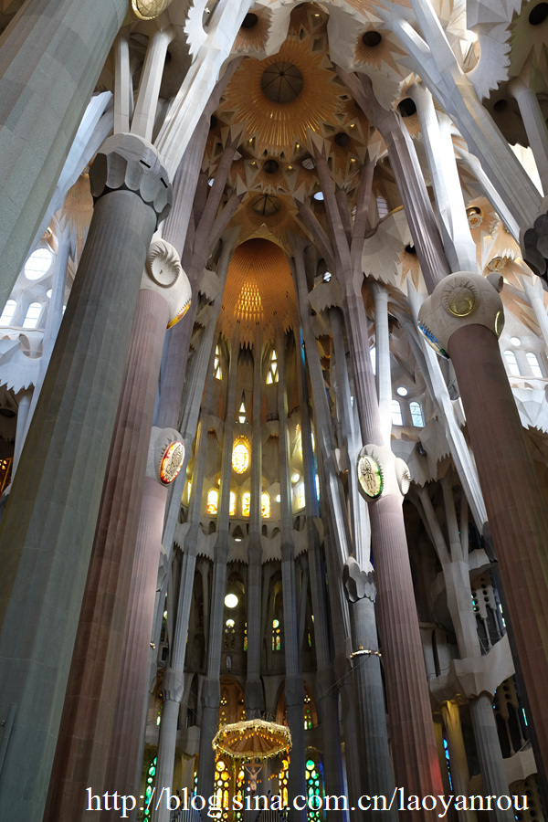 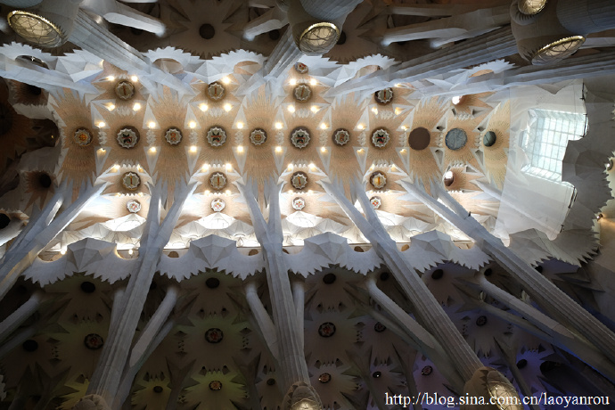 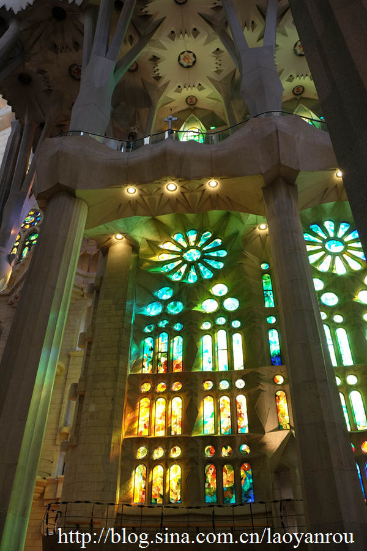 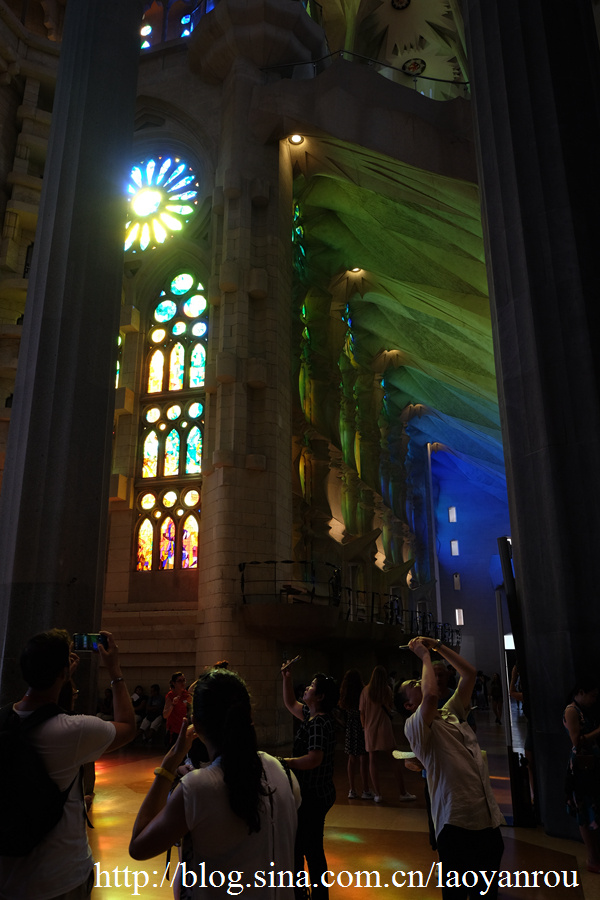 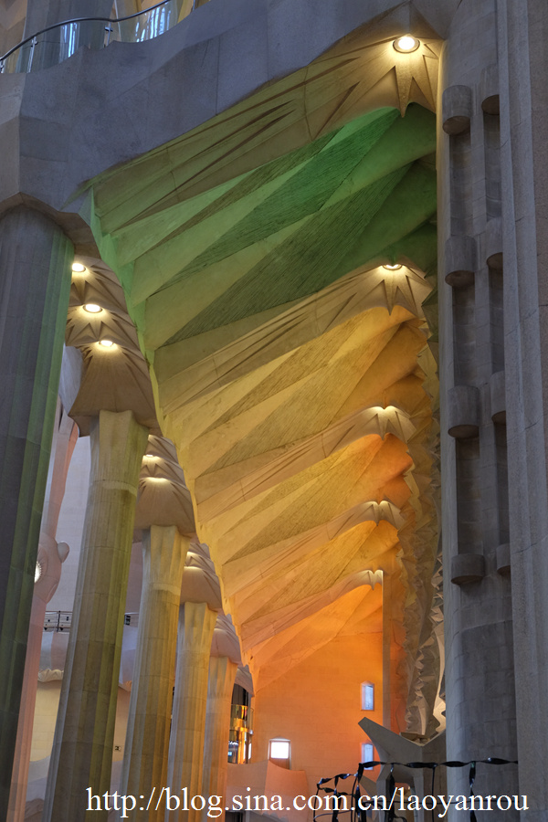 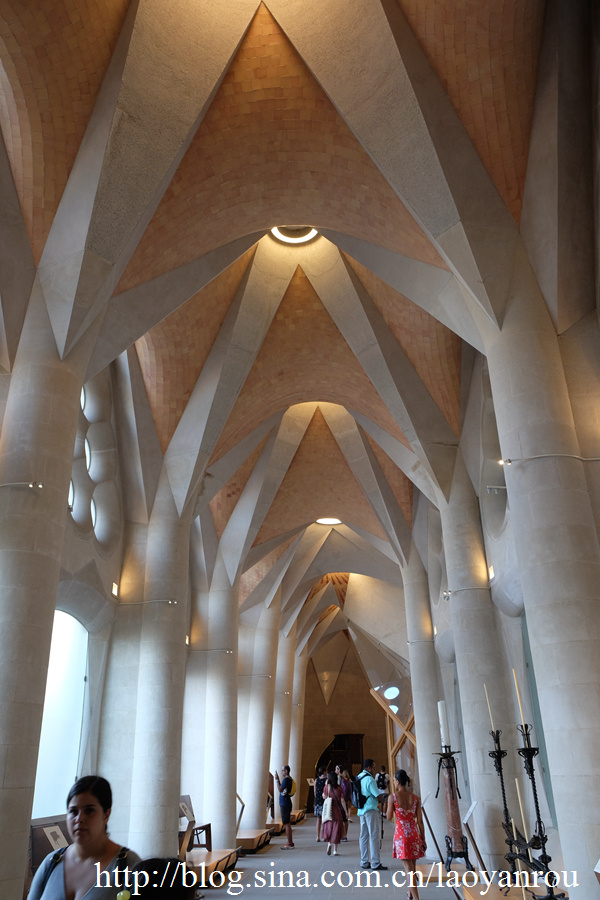
相比圣家堂来说，巴塞罗那主教堂则是典型得不能再典型的哥特式教堂了，狼牙棒似的哥特式塔尖、暗灰色石灰岩堆砌起来不带任何修饰的哥特柱、阴暗灰黑朴素的高大穹顶，中规中矩乌黑鎏金的祭坛，貌似没啥过人之处。但值得一提的是，该主教堂可以供游人登顶，沿着主教堂屋脊一路眺望巴塞老城和远处的地中海，也不失为一种有趣的体验。 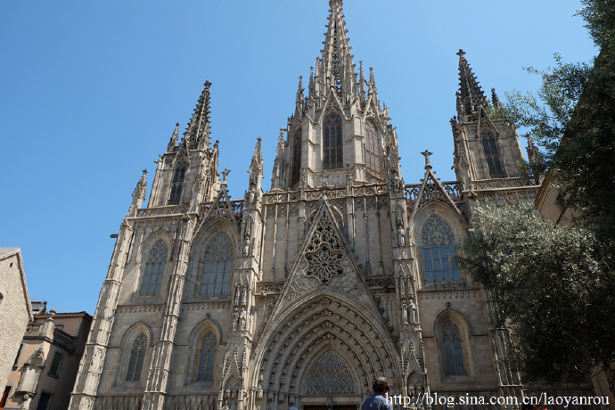
巴塞罗那主教堂
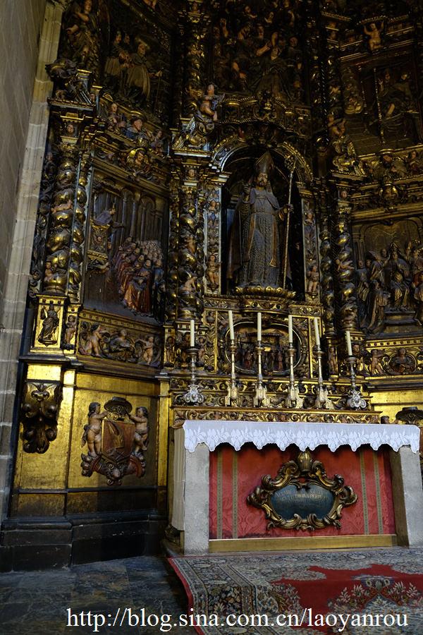
礼拜堂祭台
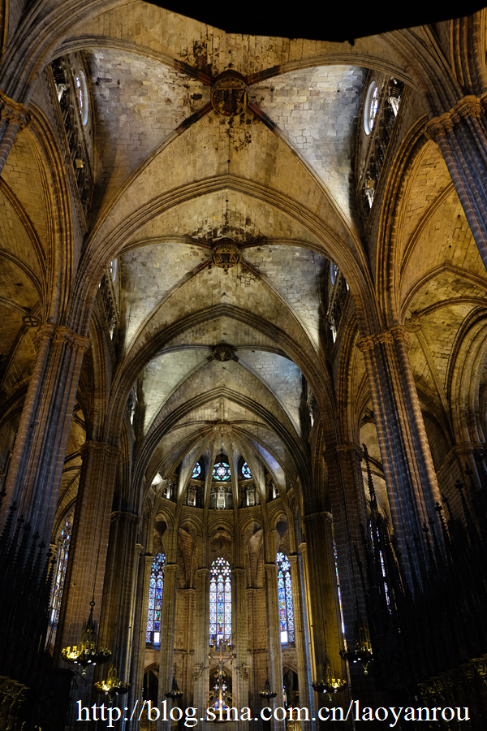
哥特式穹顶
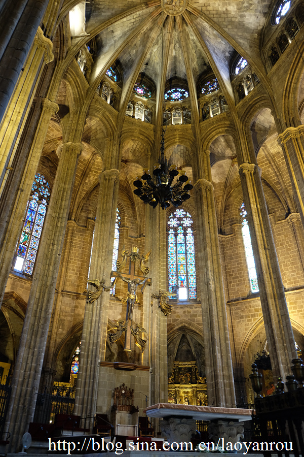
正殿祭台
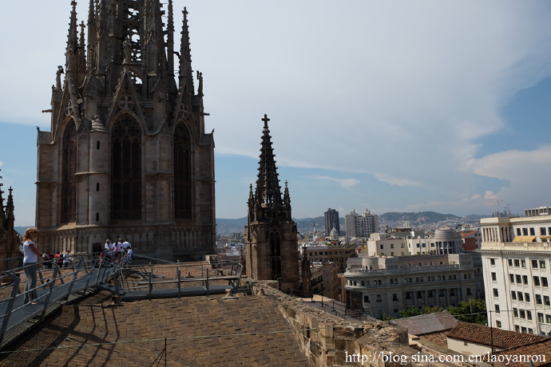
教堂屋顶
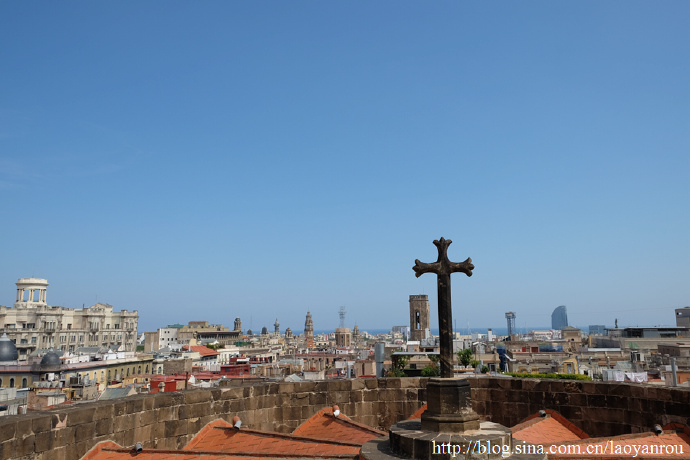
屋顶远眺巴塞城
除此以外，教堂本身面积不大但附属建筑倒不少，其中有个四面回廊围起来的天井中竟然养了十好几只大白鹅，此起彼伏的鹅叫声回荡在教堂里，与肃穆的唱诗班歌声应和倒是别有一番风趣。而且中间的水池和边上的喷泉设计得也颇有一点苏州园林的意味。可见所谓“黄山归来不看岳”也并非金科玉律，还是要看他人是否也有几手看家本领，一招鲜也能吃天下。 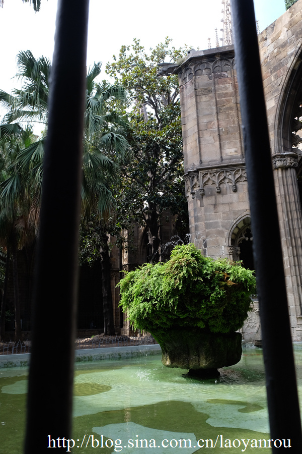
天井水池
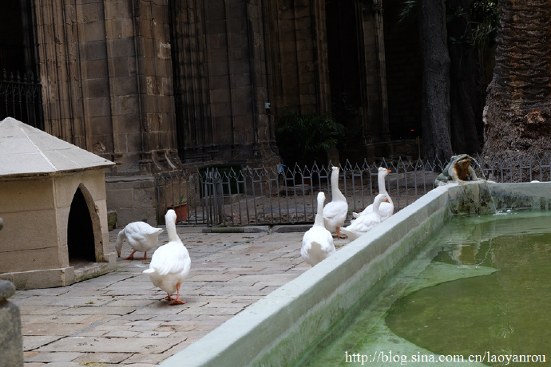
鹅鹅鹅曲项向天歌
一天经过两大教堂的观摩洗礼未免有点审美疲劳，我们沿着店铺林立、街道繁华的兰布拉大道一路走到了海边的老港，瞻仰了一下哥伦布纪念塔，吹了一会湛蓝的海面吹来的海风，唏嘘了一排接踵摩肩停靠港湾的帆船游艇，稍事平静便打道回府。 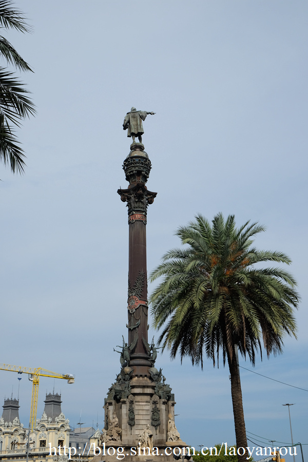
哥伦布纪念塔
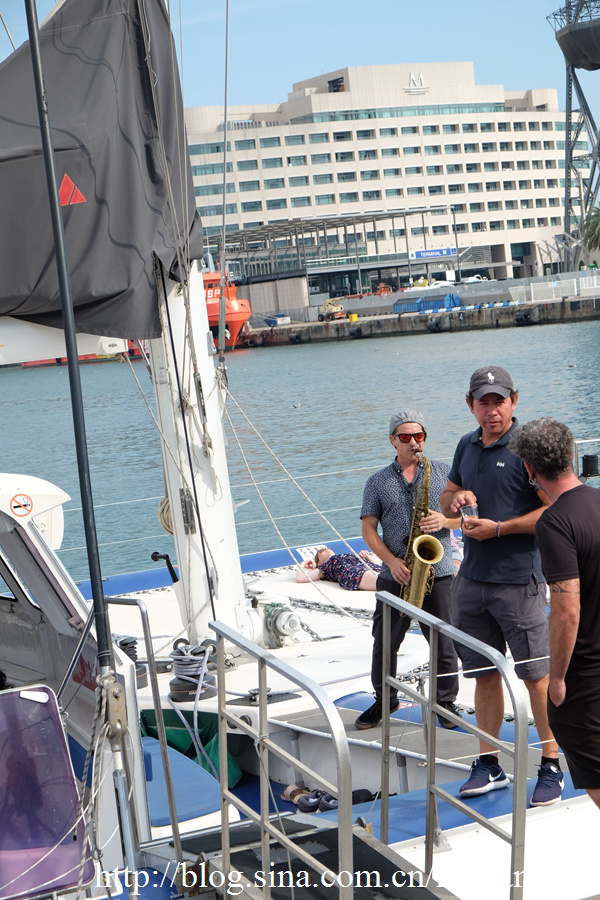
巴塞港游艇音乐家
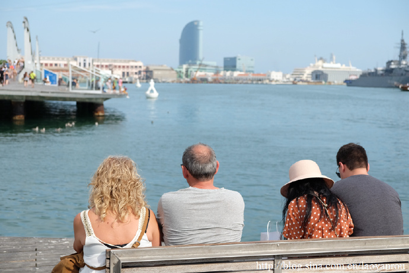
岸边长椅
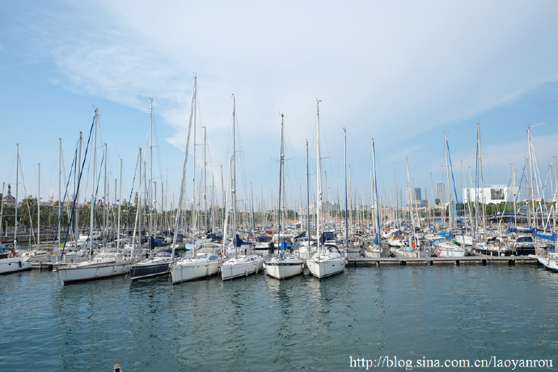
游艇会